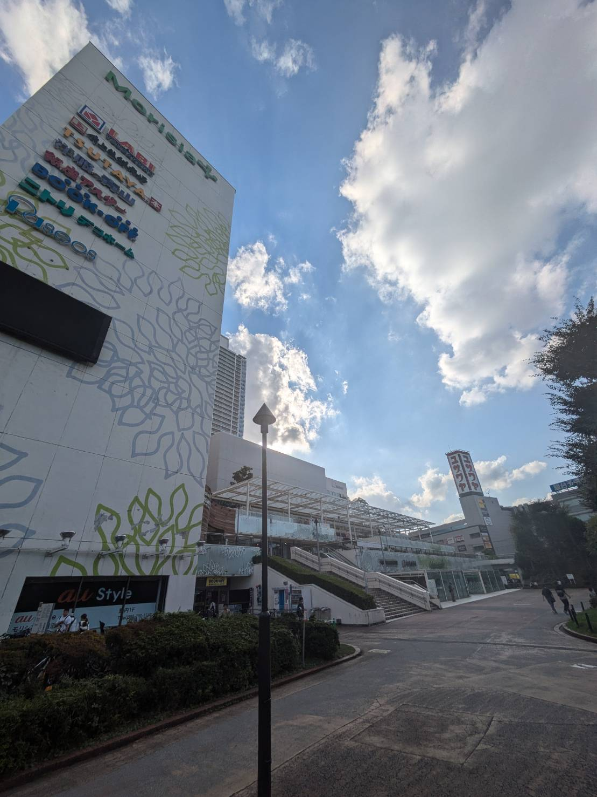
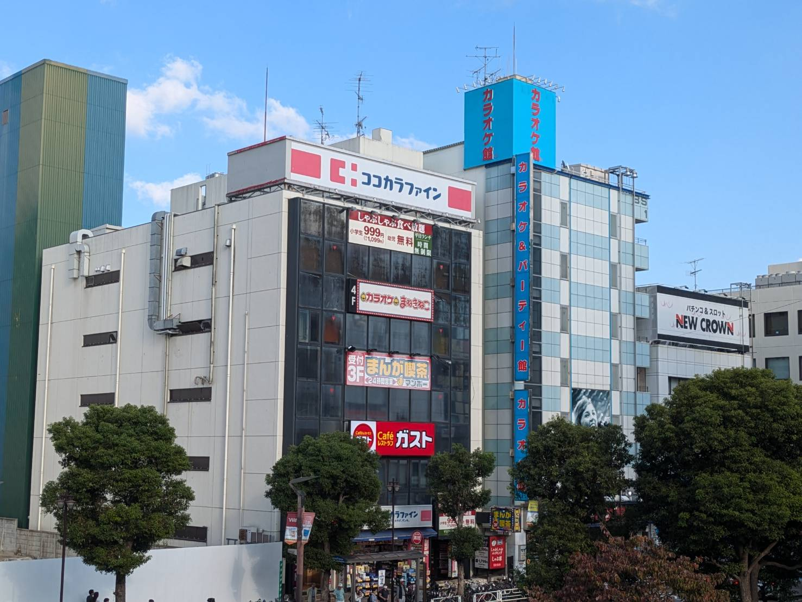
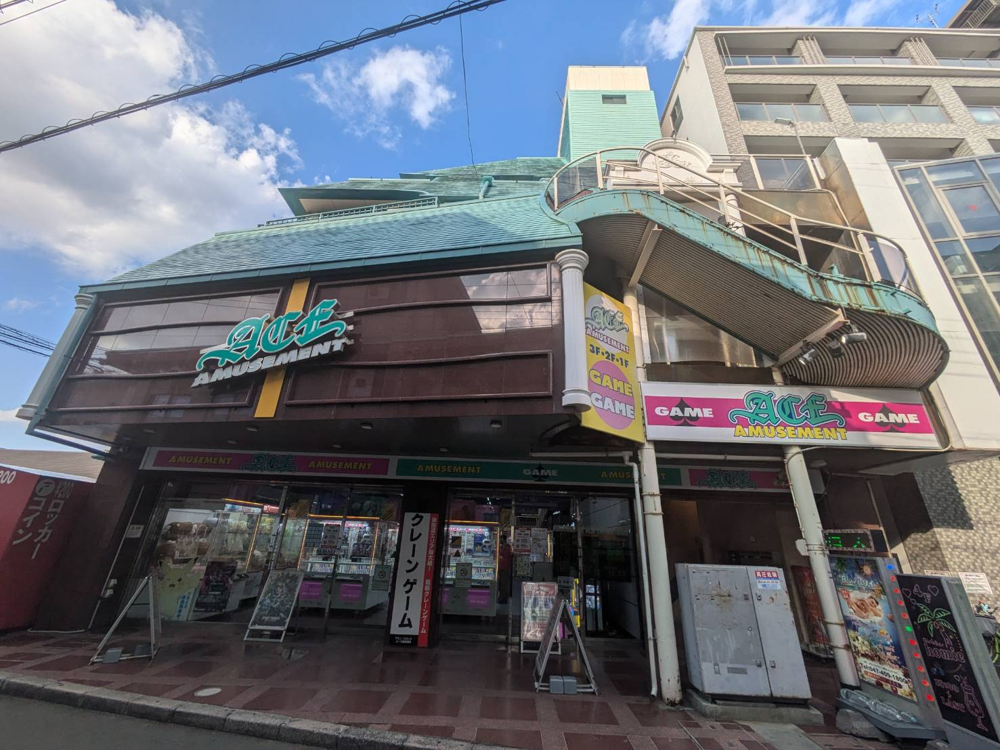

長時間滞在向けランキング
1位: モリシア津田沼
2位: カラオケまねきねこ津田沼北口店
3位: アミューズメントエース津田沼
注目ポイント
ランキングにおける評価は店内にある施設や実際にどれだけ滞在できたのかを考慮して作成しています。
写真はクリックすると拡大してみることができます。
-

1位: モリシア津田沼滞在時間:6時間
ここは中にカラオケレインボーやMorisia AMUSE PARK等様々な施設が内包されており、
長時間滞在するのに向いているスポットと言えます。店舗情報 営業時間 10:00~21:00 駐車場(地下) 24時間 駐車場(立体) 8:00~24:00 -

2位: カラオケまねきねこ津田沼北口店滞在時間:5時間
24時間営業しているカラオケです。
大学生が対象となるフリータイムプランがあるため、長時間の滞在がしやすいです。店舗情報 営業時間 24時間営業 大学生優待 あり 推奨人数 1~20名 -

3位: アミューズメントエース津田沼滞在時間:4時間
ここはゲーム筐体が多く、様々なゲームをプレイすることが可能です。
また駅に近い為周囲が暗くなっても街灯もあり利便性もある施設です。店舗情報 営業時間 9:00~24:00 公式X(旧Twitter) ace-tu 設置カテゴリ ビデオ、プリクラ、メダル、音ゲー、プライズ、ダーツ等
×
×
×